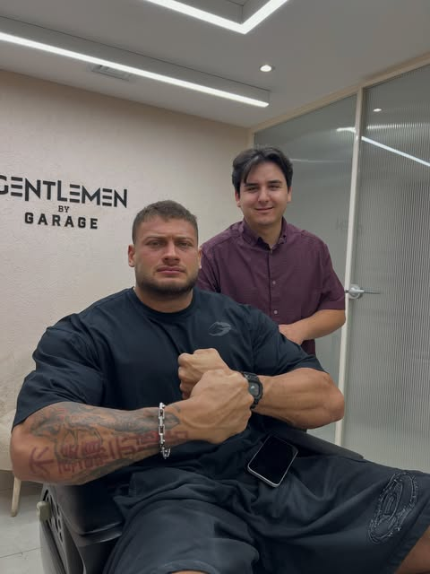

SAÇ. SAKAL. KARAKTER.
İSTANBUL / ETİLER · NİŞANTAŞI
01 / DENEYİMİNİ SEÇ
Sana nasıl
bir saat ayıralım?
Kesim, uzman görüşü veya özel bir alan.
İhtiyacına göre keşfet.
Her deneyimde kişisel analiz.
Her kesimde senin karakterin.
02 / STUDIO
Form değişir.
Karakter kalır.
Yüzün oranları, saçın doğal hareketi, günlük alışkanlıkların. Tasarımı belirleyen bunlar.
İyi bir kesim,
seni tanımakla
başlar.
01 Yüz & saç analizi
02 Kişisel form tasarımı
03 Günlük şekillendirme
Danışmanlıkta kesimi kim yapıyor?
Yüz ve saç analizi Batuhan Sincer tarafından yapılır. Kesimi, onun yönlendirmesiyle profesyonel ekip üyesi gerçekleştirir. Batuhan Sincer bu hizmette kesim yapmaz.
Hizmetler ne kadar sürüyor?
Kesim, danışmanlık ve VIP Room hizmetlerinin her biri için belirtilen süre 60 dakikadır. Uzman, gün ve saat seçimi randevu sisteminde yapılır.
VIP Room’a bir konuk getirebilir miyim?
Evet. Özel VIP odadaki birebir hizmet süresince bir konuğunuz size eşlik edebilir.
Randevuyu nasıl tamamlarım?
Burada hizmeti ve fiyat seçeneklerini inceleyin. Devam ettiğinizde Dükkan Defteri üzerinden uzman, müsait gün ve saat seçimini yaparak iletişim bilgilerinizle randevunuzu tamamlayın. Güncel fiyatı da bu sistemde teyit edin.
BİR SONRAKİ ÇİZGİN
PAZARTESİ — CUMARTESİ
10:00 — 20:00
KOLTUK
SENİN.
ONLINE RANDEVU / 01
SANA ÖZEL
BİR SAAT.
Deneyimini seç. Tercihini netleştir. Randevunu tamamla.